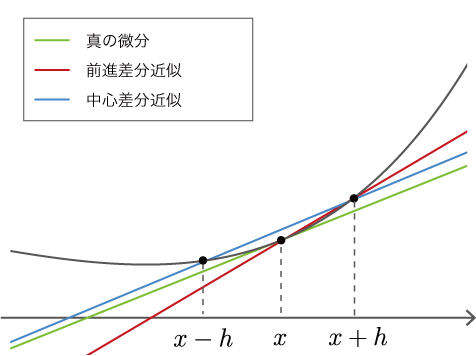

ステップ4 数値微分¶
前ステップまでに実装したコード
[1]:
import numpy as np
class Variable:
def __init__(self, data):
self.data = data
class Function:
def __call__(self, input):
x = input.data
y = self.forward(x)
output = Variable(y)
return output
def forward(self, x):
raise NotImplementedError()
class Square(Function):
def forward(self, x):
return x ** 2
class Exp(Function):
def forward(self, x):
return np.exp(x)
私たちはこれまで、VariableクラスとFunctionクラスを実装してきました。実は、そのようなクラスをわざわざ実装してきた理由は、微分を自動で求めるためにあります。ここでは、まず微分について復習し、数値微分と呼ばれるシンプルな方法で微分を求めてみます。そして次のステップから、数値微分に代わるより効率的なアルゴリズム――バックプロパゲーション――を実装します。
NOTE
機械学習に限らず、多くの分野において微分は重要です。流体力学や金融工学、気象学のシミュレーションやエンジニアリング設計の最適化など、多くの分野で微分計算が必要とされます。そして、そのような様々な分野で、自動で微分を求める機能が実際に用いられています。
4.1 微分とは¶
微分とは何でしょうか。微分とは、簡単に言えば「変化の割合」を表したものです。たとえば、ある物体の時刻に関する位置の変化の割合――位置の微分――は、速度になります。また、時刻に関する速度の変化の割合――速度の微分――は、加速度に対応します。このように、微分は変化の割合を表します。そしてそれは、「極限的に小さな時間」での変化量として定義されます。数式で表すと、\(f(x)\)という関数があったとき、\(x\)における微分は次の式で定義されます。
式(4.1)における\(\displaystyle\lim_{h \to 0}\)は極限を表し、\(h\)を限りなく\(0\)に近づけることを意味します。ここで、式(4.1)内の\(\frac{f(x + h) - f(x)}{h}\)は、図4-1のように、2点を通る直線の傾きになります。

図4-1 曲線\(y=f(x)\)とその2点を通る直線
図4-1で示すように、\(x\)と\(x+h\)の2点における関数\(f(x)\)の変化の割合が、\(\frac{f(x+h) - f(x)}{h}\)です。ここで、\(h\)という幅を限りなく0に近づけることで、\(x\)における変化の割合が求まります。これが\(y=f(x)\)の微分です。また、\(y=f(x)\)が微分可能な区間であれば、式(4.1)はその区間内の「任意の\(x\)」において成り立ちます。そのため式(4.1)の\(f'(x)\)も関数であり、それは\(f(x)\)の導関数と呼ばれます。
4.2 数値微分の実装¶
それでは、微分の定義式である式(4.1)に従って、微分を求める実装を行いましょう。ここでの注意点は、コンピュータは極限を扱えないことです。そこで、\(h\)を近似して表すことにします。たとえば、\(h = 0.0001\)（= 1e-4）のような微小な値を用いて、式(4.1)を計算します。そのような微小な差異を用いて関数の変化量を求める手法は、数値微分（numerical differentiation）と呼ばれます。
数値微分は、微小な値\(h\)を使って「真の微分」を近似します。そのため、その値には誤差が含まれます。その近似誤差を減らす工夫として「中心差分近似」という手法があります。中心差分近似では、\(f(x)\)と\(f(x+h)\)の差分を求める代わりに、\(f(x-h)\)と\(f(x+h)\)の差分を求めます。図で示すと、**図4-2 **の青線のようになります。

図4-2 「真の微分」、「前進差分近似」、「中心差分近似」の比較
図4-2で示すとおり、\(x\)と\(x+h\)の2地点での傾きを求める手法を「前進差分近似」と言います。そして、\(x-h\)と\(x+h\)の場合を「中心差分近似」と言い、こちらの方が誤差が少ないことが知られています。その証明は本書では行いませんが、直感的には図4-2の直線の傾きから見て取れます。なお、中心差分近似における直線の傾きは、\(\frac{f(x+h) - f(x-h)}{2h}\)になります（分母が\(2h\)であることに注意）。
NOTE
前進差分近似に比べて、中心差分近似の方が真の微分値に近いことは、テイラー展開によって証明できます。その証明については、文献[1] などを参考にしてください。
それでは、中心差分近似を使って数値微分を求める関数をnumerical_diff(f, x, eps=1e-4)という名前で実装しましょう。ここで引数のfは、微分の対象となる関数をFunctionインスタンスで与えます。引数のxは、微分を求める変数をVariableインスタンスで与えます。引数のepsは微小な値を表し、デフォルト値は1e-4（=0.0001）とします（epsは、epsilonの略語）。すると、数値微分は次のように実装できます。
[2]:
def numerical_diff(f, x, eps=1e-4):
x0 = Variable(x.data - eps)
x1 = Variable(x.data + eps)
y0 = f(x0)
y1 = f(x1)
return (y1.data - y0.data) / (2 * eps)
上記のように、Variableのインスタンス変数dataに実際のデータがあることに注意すれば、他に気をつける点はないでしょう。それでは、「ステップ3」で実装したSquareクラスを対象に、実際に微分を求めてみます。
[3]:
f = Square()
x = Variable(np.array(2.0))
dy = numerical_diff(f, x)
print(dy)
4.000000000004
上の結果が示すように、\(y=x^2\)の\(x=2.0\)における微分は\(4.000000000004\)となりました。誤差を含まない正確な微分の値が\(4.0\)なので、この実行結果はおよそ正しい値と言えます。
WARNING
微分の計算は、解析的に解くこともできます。解析的に解くとは、数式の変形だけで答えを導くことです。上の例では、微分の公式から、y=x^2のとき\(\frac{dy}{dx} = 2x\)となります（\(\frac{dy}{dx}\)は、\(y\)の\(x\)に関する微分を表す記号です）。そのため、\(x=2.0\)における微分は、\(4.0\)になります。この\(4.0\)という値が、誤差を含まない正確な値です。上の数値微分の結果は、正確には\(4.0\)ではありませんが、その誤差はかなり小さいことが分かります。
4.3 合成関数の微分¶
ここまで私たちは、\(y=x^2\)という単純な関数を扱いました。続いて、合成関数の微分を求めてみましょう。ここでは、\(y = (e^{x^2})^2\)という計算に対して、微分\(\frac{dy}{dx}\)を求めてみます。コードは、次のようになります。
[4]:
def f(x):
A = Square()
B = Exp()
C = Square()
return C(B(A(x)))
x = Variable(np.array(0.5))
dy = numerical_diff(f, x)
print(dy)
3.2974426293330694
上のコードでは、一連の計算をfという関数にまとめました。Pythonでは関数もオブジェクトであるため、関数をオブジェクトとして、他の関数の引数に渡すことができます。実際に上の例では、numerical_diff関数に、関数であるfを渡します。
上の結果を見ると、微分は3.297...となりました。これは、xを0.5から微小な値だけ変化させたら、yの値は、その微小な値の3.297...倍だけ変化することを意味します。
以上で、私たちは微分を“自動で”求めることに成功しました。目的の計算をコードで表せば（上の例では、関数fを定義しました）、後はプログラムによって自動で微分が求められたのです。この方式に従えば、たとえ関数がどのように複雑に組み合わさったとしても、微分を自動で求めることができます！ 後は、関数の種類を増やしていけば、どのような計算であっても――それが微分可能な関数であれば――微分の値を求められるのです。しかし残念ながら、数値微分には問題があります。
4.4 数値微分の問題点¶
数値微分の結果には誤差が含まれます。多くの場合、その誤差は非常に小さいのですが、計算によっては大きな誤差を含む場合があります。
NOTE
数値微分の結果に誤差が含まれやすい理由は、主に「桁落ち」が原因です。中心差分近似などの「差分」を求める計算では、同じ程度の大きさの数値から差を取りますが、その計算結果において桁落ちにより有効桁数が減少します。たとえば、有効桁数が4桁の場合に、\(1.234 - 1.233\)という計算――近い値どうしでの引き算――を考えてみましょう。その結果は\(0.001\)となり、有効桁数は1桁になってしまいます。本来は、\(1.234\cdots - 1.233\cdots = 0.001434\cdots\)のような結果だったかもしれないのに、桁落ちのせいで\(0.001\)になったと考えることができます。これと同じ原理で、数値微分の差分の計算では桁落ちが発生するため、誤差が含まれやすくなります。
また、数値微分のより深刻な問題は、計算コストが大きい点です。より具体的に言えば、複数の変数に対して微分を求める場合、変数ごとに微分を求める必要があります。ニューラルネットワークでは数百万を超える変数（パラメータ）に対して微分を求めるケースもあり、その数の微分を数値微分で求めるのは現実的ではありません。それに代わって登場するのがバックプロパゲーションです。次のステップから、いよいよ私たちはバックプロパゲーションへと進みます。
なお、数値微分は簡単に実装でき、おおよそ正しい値を得ることができます。一方、バックプロパゲーションは複雑なアルゴリズムであり、その実装には容易にバグが紛れ込みます。そこで、バックプロパゲーションの実装の正しさを確認するために、数値微分の結果を使います。これは勾配確認（gradient checking）と言って、数値微分の結果とバックプロパゲーションの結果を比較する手法です。勾配確認は、「ステップ10」で実装します。